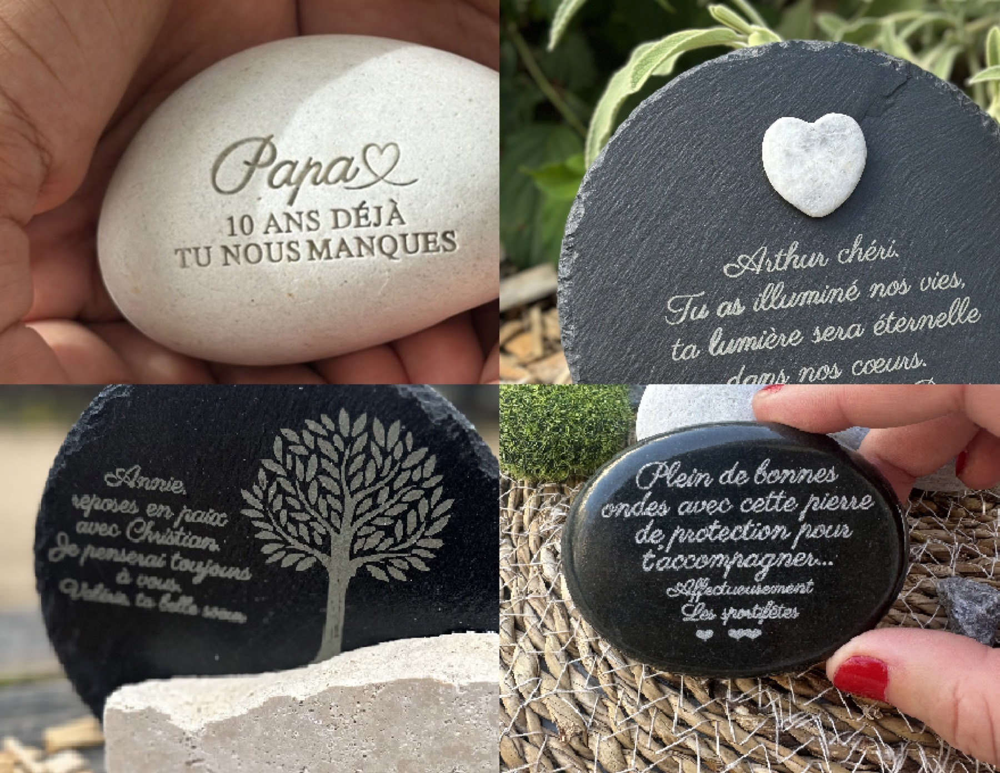
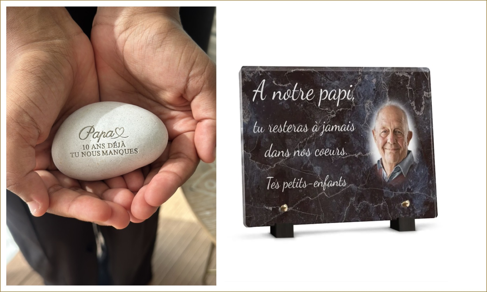
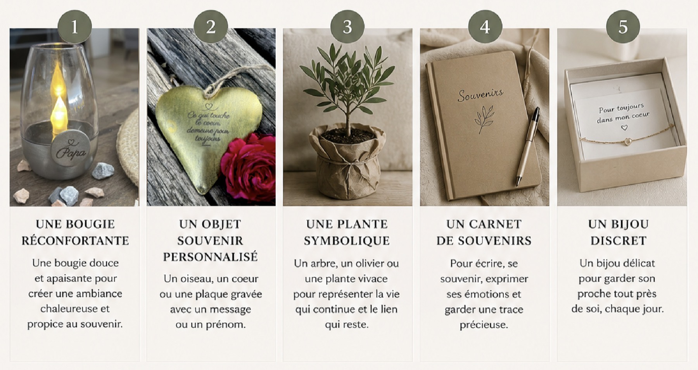
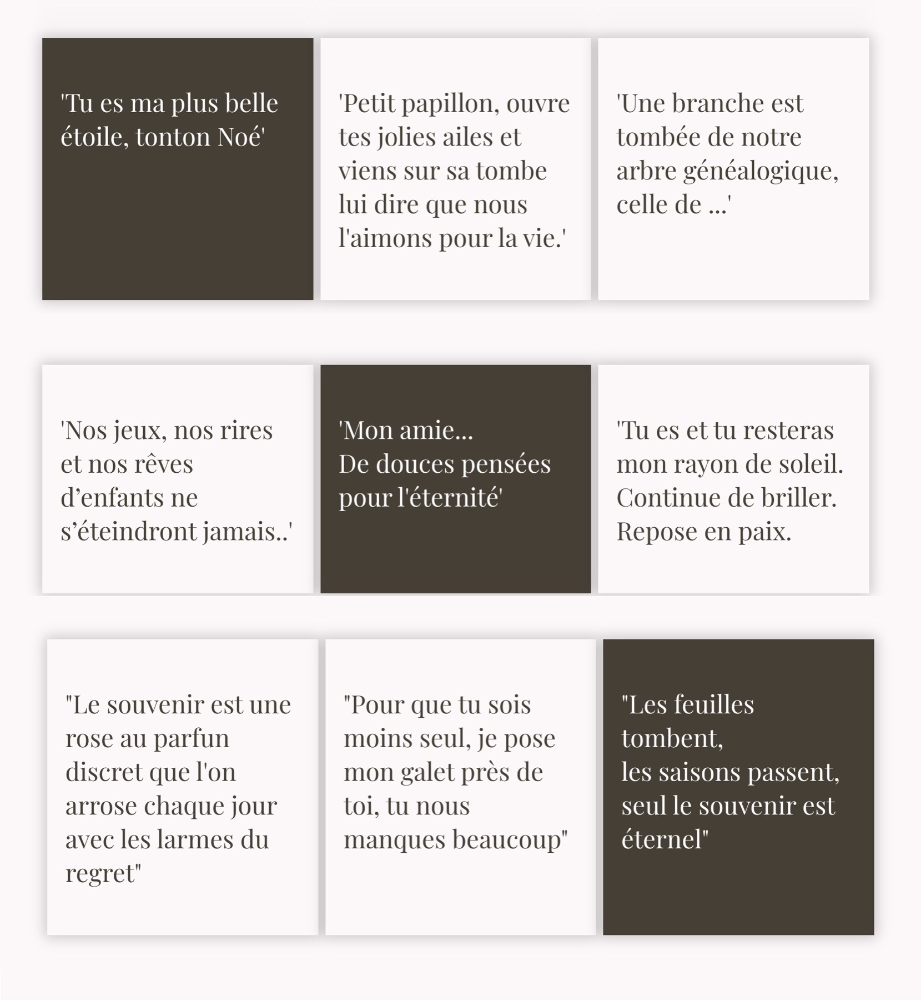
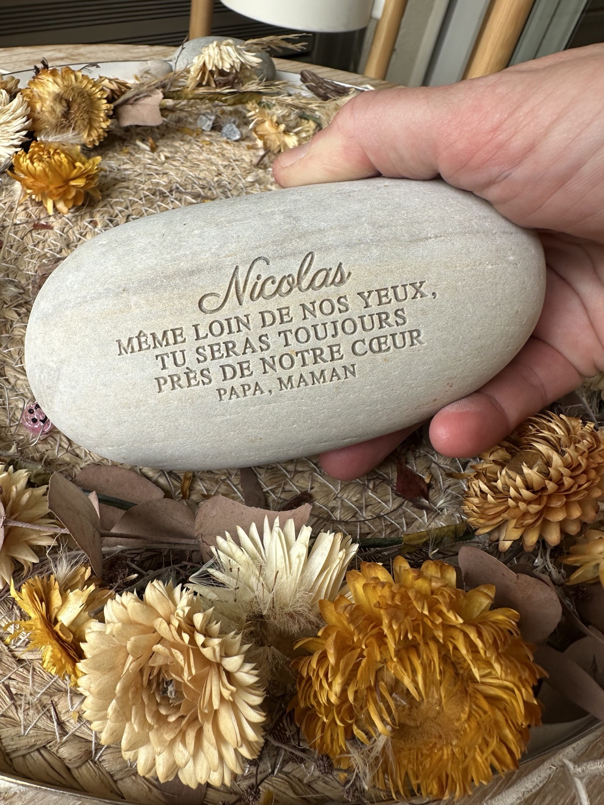
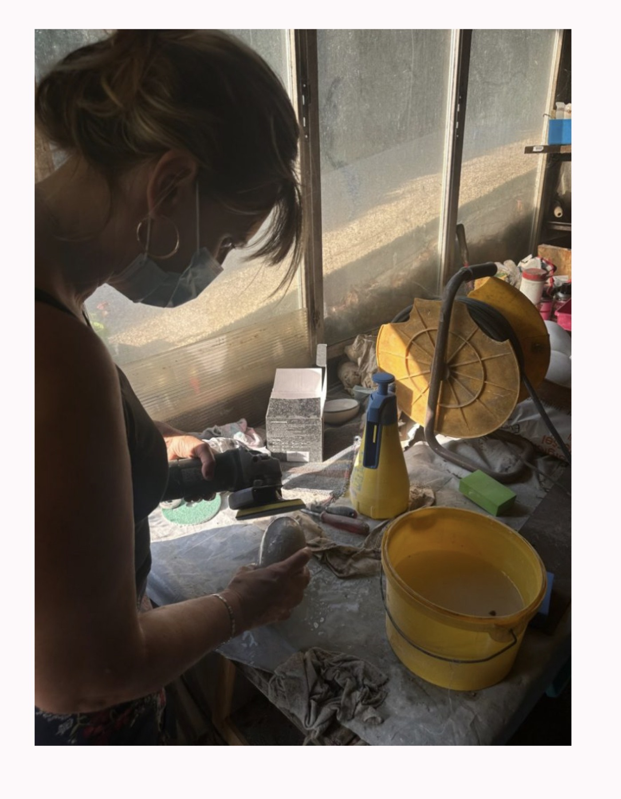
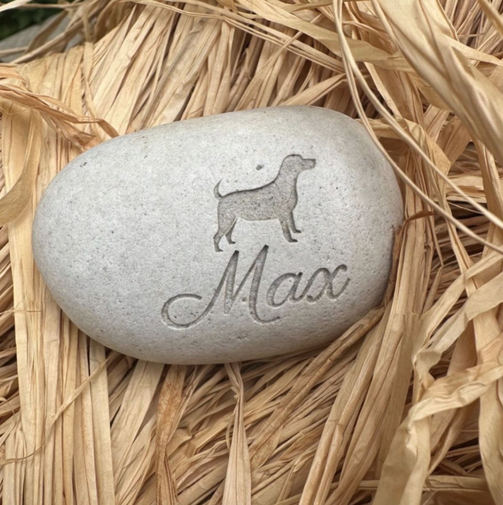
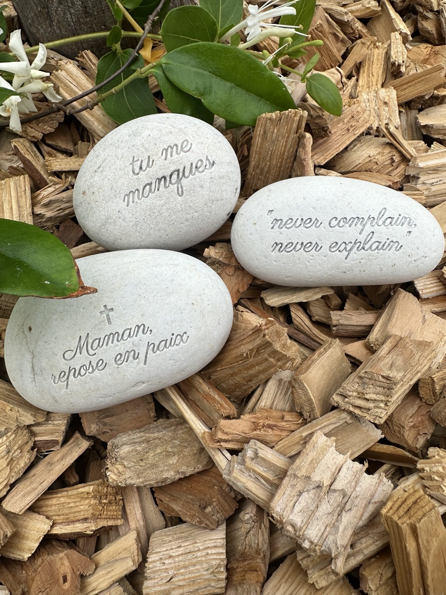

Le journal de l'atelier
Blog
Conseils, inspirations et réflexions autour du deuil, de la mémoire et des hommages personnalisés.
-

Quelle pierre choisir pour une plaque funéraire extérieure ?
Lorsqu’on souhaite rendre hommage à un proche disparu, on recherche souvent un objet à la fois personnel, élégant et durable . La pierre naturelle s’impose alors comme un choix particulièrement…
Lire l'article -

Un hommage funéraire peut-il être moderne & élégant ?
Oui. Un hommage funéraire peut être sobre, contemporain et profondément émouvant , sans reprendre les codes traditionnels. Aujourd’hui, certaines familles recherchent des créations plus discrètes,…
Lire l'article -

Galet funéraire ou plaque funéraire : que choisir ?
Lorsqu’on souhaite rendre hommage à un proche disparu, le choix de l’objet funéraire est très personnel. Galet funéraire ou plaque funéraire : lequel choisir ? Les deux permettent de conserver un…
Lire l'article -

10 idées de cadeaux de deuil pour soutenir une personne qui vient de perdre un proche
Quand une personne traverse un deuil, il est souvent difficile de trouver les mots justes. Un geste simple, délicat et sincère peut pourtant apporter beaucoup de réconfort. Offrir un cadeau de deuil…
Lire l'article -

Pourquoi les galets sont-ils un symbole universel du souvenir ?
Simples, naturels et intemporels, les galets sont présents dans les rivières, sur les plages et les chemins du monde entier. Au-delà de leur forme douce et apaisante, ils portent une symbolique forte…
Lire l'article -

Les cimetières changent : vers des lieux de mémoire plus vivants
Longtemps, les cimetières ont été perçus comme des lieux austères, où dominaient le marbre et le silence. Aujourd’hui, les mentalités évoluent. De plus en plus de familles souhaitent rendre hommage à…
Lire l'article -

Comment parler de la mort aux enfants grâce aux objets souvenirs
Les enfants vivent eux aussi le deuil, même s’ils l’expriment différemment des adultes. Souvent, ils trouvent plus facilement les mots avec un dessin , un cœur ou une petite phrase écrite de leur…
Lire l'article -

Quand un cœur ancien inspire une création d’aujourd’hui
Lors d’une visite dans un ancien cimetière de Savoie, j’ai découvert de petits cœurs en métal gravés datant probablement de plus d’un siècle. Malgré le temps et les intempéries, ils portaient encore…
Lire l'article -

Modèles de "texte hommage décès" : quand les mots manquent face à la perte
Trouver les bons mots au moment du deuil est une épreuve. La douleur est là, le silence pèse, et pourtant… on aimerait tant dire à quel point on l’aimait , combien il ou elle nous manque , ou…
Lire l'article -

Pourquoi choisir un galet personnalisé en pierre naturelle
Un fragment de nature, témoin de l’éternité. Le galet est bien plus qu’une pierre. C’est un élément façonné par les forces de la nature depuis des millénaires — poli par l’eau, le vent, les saisons.…
Lire l'article -

Un mémorial familial original : et si la nature s’invitait dans le souvenir ?
Quand on cherche à honorer la mémoire d’un être cher, les mots-clés qui reviennent souvent sont « mémorial familial » , « souvenir durable » , ou encore « hommage original » . Ce sont ces mots, tapés…
Lire l'article -

Pourquoi choisir une décoration funéraire naturelle et artisanale ?
Dans un moment aussi délicat que le deuil, chaque détail compte. Déposer un objet sur une tombe, ce n’est pas seulement un geste : c’est une manière de dire « tu comptes toujours » , d’offrir douceur…
Lire l'article -

Galets funéraires pour animaux : un objet doux et apaisant pour vous accompagner
Perdre un animal, c’est perdre un membre de la famille . Un compagnon fidèle, un confident silencieux, un lien unique… Alors comment traverser cette douleur ? Et comment aider un enfant à faire le…
Lire l'article -

Article funéraire original : comment rendre un hommage unique et personnalisé
Lorsqu’on recherche un article funéraire original , c’est souvent pour exprimer un lien fort, une passion partagée ou une personnalité unique. Aujourd’hui, les objets funéraires ne se limitent plus…
Lire l'article -

Quels objets mettre sur une tombe? Idées, conseils et inspirations...
Perdre un être cher est une épreuve, mais entretenir sa mémoire est un acte d’amour. Lorsqu’on se rend au cimetière, une question revient souvent : quels objets peut-on mettre sur une tombe pour…
Lire l'article